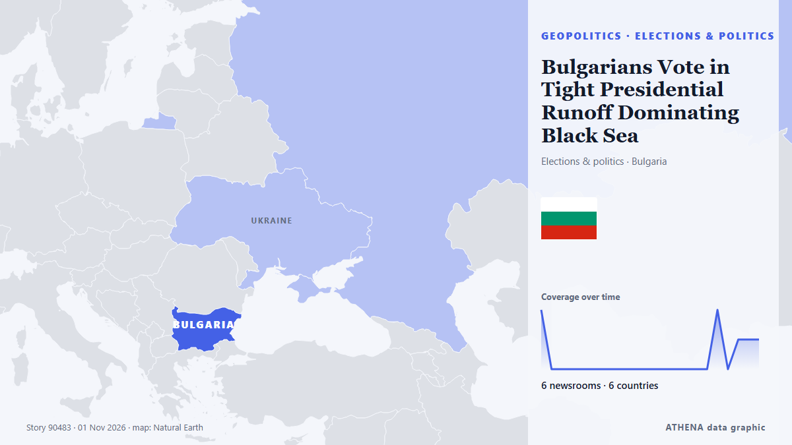

Elecciones y política
| 20 oct | 1 |
|---|---|
| 21 oct | 1 |
| 22 oct | 0 |
| 23 oct | 1 |
| 24 oct | 1 |
| 25 oct | 0 |
| 26 oct | 1 |
| 27 oct | 2 |
| 28 oct | 3 |
| 29 oct | 4 |
| 30 oct | 7 |
| 31 oct | 0 |
| 1 nov | 3 |
| 2 nov | 0 |
Los titulares se muestran en inglés, tal como se publicaron.

Bulgarians Vote in Tight Presidential Runoff Dominating Black Sea
Bulgarians headed to the polls on Sunday, Nov. de Kyiv Post
Judge tosses DOJ’s lawsuit over Alaska Senate race
A federal judge on Sunday dismissed the Trump administration’s lawsuit in Alaska that sought to block certification if the second Dan Sullivan running for Senate causes voter confusion and leads… de The Hill
Can Democrats win the US Senate? 10 key midterm races to watch
From Texas to Maine, rising prices and the Iran war put key Senate races in play as Democrats fight for control. de Al Jazeera English
Presidential Runoff Turnout Stands at 19.33% as of 16:00
Voter turnout in Bulgaria’s presidential and vice-presidential election stood at 2.4% as of 9:00 a.m.... de Novinite
Haley Stevens endorses GOP candidate in Michigan Senate race, spurning Abdul El-Sayed
Rep. Haley Stevens was scheduled to attend a unity event today with Abdul El-Sayed, who beat her in the Democratic primary. de NPR
Trump administration bolsters bid to block Alaska Senate certification
President Donald Trump’s administration filed a revised lawsuit on Thursday seeking to block Alaska’s election results if Republican incumbent Dan Sullivan loses narrowly and issued more than 40… de FBC News
Thousands protest in India's capital against voter roll revision
NEW DELHI: Thousands joined a protest led by opposition politicians in India’s capital on Sunday, renewing demands for the country’s election chief to resign over an overhaul of voter lists they say… de New Straits Times
UK PM Open to Slavery Apology but Rules Out Financial Reparations
British Prime Minister Andy Burnham has said he is open to a formal apology for Britain’s role in the transatlantic slave trade but has rejected financial reparations ahead of a Commonwealth summit… de Khaama Press
Indian authorities tighten security ahead of big opposition march in Delhi
Protesters are set to demand the resignation of India's election chief over a controversial revision of voter lists. de CNA (Channel NewsAsia)
US judge orders Trump administration to cease threats to prosecute election officials
The ruling comes days before the US midterm elections that will determine control of Congress. de The Straits Times
Turkic states target 2027 launch for joint satellite from Kazakhstan
Russia also intends to assist Tanzania in establishing a national space agency. de TASS (English)
US Midterm Early Voting Hits Record 48 Million
Participation has surged in key battleground states. de The Straits Times
Alaska Senate candidate denies knowing about alleged plot to put two Dan Sullivans on ballot
The incumbent Republican running for re-election and allies have accused the Democrats of trying to confuse voters by recruiting a second Dan Sullivan to also stand in the race. de BBC News
Flavio Bolsonaro Claims Political Persecution After Leaving Brazil
Bolsonaro disembarks plane after landing in Florida: AFP. de Gulf News
UN Western Sahara peacekeeping mission left in limbo after US-Russia veto standoff
Just days before the US midterm elections, Washington wants to secure the adoption of a resolution that would accelerate the settlement of the conflict and radically transform MINURSO. de The Africa Report
Pope Leo becomes first pontiff to cast ballot in US election
WASHINGTON, Oct 30 - Pope Leo XIV cast a ballot by mail in the US midterm elections, the Vatican press office said on Friday, a historic first for the American-born pontiff. de The Straits Times
Surging Costs of Living Top US Voter Concerns
Amid upcoming midterm elections, a majority of US voters express concerns over the soaring cost of living. de Arab News
Just the Docs: Federal Judge Rejects DOJ Bid to Sequester 20,000 California Mail Ballots
Order: Federal judge denies DOJ request to make California set aside 20,000 mail ballots from alleged noncitizens. de Just Security
What Maria Corina Machado’s return to Venezuela means for its democratic transition
CARACAS, Oct 23 - The Venezuelan opposition movement headed by Nobel Peace Prize laureate Maria Corina Machado is preparing for eventual elections, including a new effort to boost voter registration… de The Straits Times